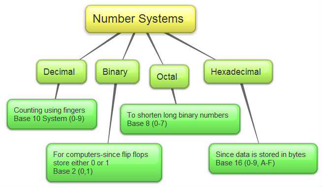

What are Computer Number systemsBinary, decimal, and hexadecimal are the three sorts of computer number systems we covered in class. A brief summary of each of these number systems may be found below: Binary: The binary number system, often known as the base-2 number system, is a way of representing numbers that only have two digits: zero (0) and one (1). (1). Computers manipulate and store all of their data, including numbers, words, films, pictures, and music, using the binary number system. The binary system has the advantage of being simple. Anything that has a sequence of switches that can flip between a "on" and an "off" position can be turned into a computing device. The decimal number system is based on the decimal system. Base ten is used to represent numbers. Decimal notation is a method of representing decimal numbers using a base often. In computer applications, this number system is extensively utilized. It's also known as the base-10 number system because it has ten digits: 0,1,2,3,4,5,6,7,8, and 9. Hexadecimal: The Hexadecimal number system has a base of 16 and is a common choice for representing long binary values due to its compact format and ease of understanding when compared to long binary strings of 1s and 0s. The hexadecimal numbering system, which is based on the Base-16 system, employs 16 digits and a range of numbers from 0 to 15. The numbers 0, 1, 2, 3, 4, 5, 6, 7, and 8 are used in this system. 7th, 8th, 9th, 10th, 11th, 12th, 13th, 14th, and 15th To be included in this numbering system, two-digit decimal numerals 10, 11, 12, 13, 14, and 15 must be represented by a single letter. The alphabetic characters A, B, C, D, E, and F are used to represent two-digit decimal numbers in hexadecimal to address these values. |
.jpg)
|
|  |
How would you convert in the middle of the Computer Number System
To convert binary to decimal: multiply each bit by 2 and then add the ones that have a 1 rather than a 0. Convert each bit into decimal notation and work your way up by multiples of two starting at the left. Then add the values of each nibble together.
|